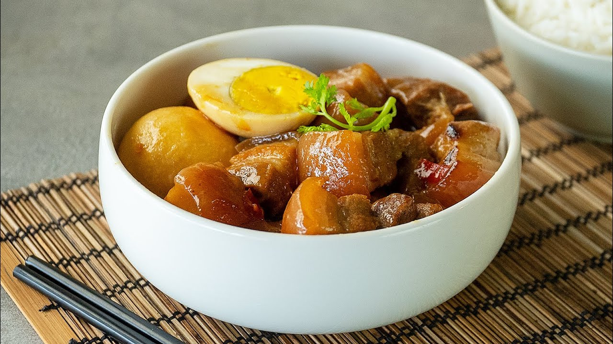

Home
How to cook Thit Kho Tau perfectly

Description
A classic Asian dish that not just very easy to make, but the flavor is phenomenal.Today, we're going to show you how to master it.
Ingredients
- 5 eggs
- 500g of porkchop
- Onion
- Chillies
- Sugar
- A peticular skill: Wok tossing(optional)
Steps
- Turn on high heat
- Start adding sugar in
- Make sure the sugar not cooking too fast, continously mixing, until they give a golden brown liquid
- Then quickly, add porkchop and right away, flip evenly, making sure the meat was cook perfectly on every side.
- Add onions, chillies, and 200ml of water
- Now put on a lit and let it simmer for at least 20 minutes at low heat
- After that, serve and enjoy!